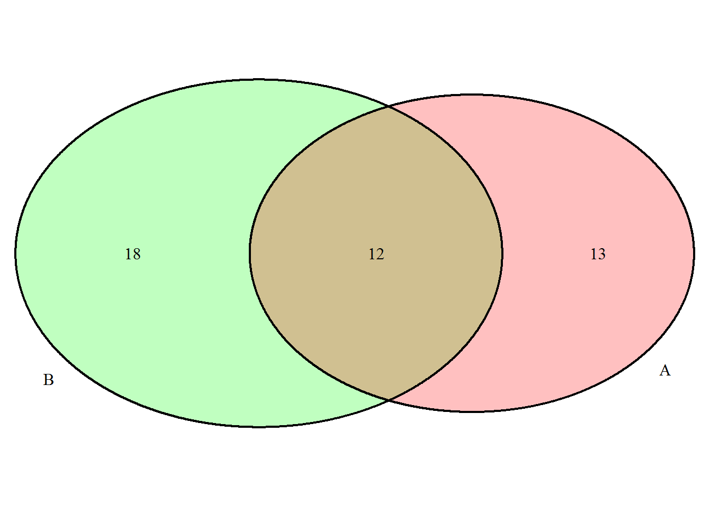

Chapter 2 Counting, sets, and probability basics
Now we review basic introductory probability theory. An experiment with observable outcomes that has some level of unpredictability to them is often called random. You may have an intuitive understanding of what “random” means and what it means for something to have a probability, chance, or likelihood of happening. We want to mathematically formalize the concept of probability.
An experiment here could be as simple as selecting one or more individuals from a fixed population. It could be a process such as an industrial machine producing some item. We will investigate the probability of different individuals being selected in the former example and the probability of the produced item having certain properties in the latter example.
2.1 Ticket-in-a-box model of probability
Here is a what I hope will be an intuitive model of probability and random experiments. Assume we have a box full of tickets. We are to shake the box up and draw one or more tickets out. It should be intuitively clear that we have little (if any) control over what ticket we draw out (assuming we aren’t looking and sorting through the tickets until we find the one we want).
Now, let the tickets be labeled with letters, numbers, colors, names, or any label you can imagine. The tickets could contain the names of all students in a class, 1 per student, or they could have the sides of a die written on them. We could even account for an experiment that is biased towards a certain outcome by having more tickets with one label and less of another label. For example, if we want to simulate a coin that has a 75% chance of flipping heads and a 25% chance for tails, then we could put in 75 “H” tickets and 25 “T” tickets. Now if you were to draw a ticket, replace it, shake the box up and draw again, you should intuitively feel that out of 10 draws, we expect to get 7 or 8 H’s and the rest T’s. The result is unpredictable, but if you drew a very large number of tickets (replacing each as we go), then if you drew only H’s, you would probably agree that you might get suspicious, say, that the T tickets were stuck to the walls or missing.
Keep this model of probability in mind as we go through this course. We will come back to this idea several times.
2.1.1 Sampling from a box of tickets
If we have a box of tickets with \(k\) different ticket labels, and \(n_i\) of tickets with label \(L_i\), then our box looks like this: \[\{L_1,L_1,\ldots,L_1, L_2, L_2,\ldots, L_2, \ldots, L_k, L_k\ldots, L_k\}.\] We wish to shuffle these up randomly and draw out \(n\) total tickets.
This can be accomplished in R as follows:
S=c(rep(L1,n1),rep(L2,n2),...,rep(Lk,nk))
sample(S,size=n,replace=T/F)Examples:
- Flip a fair coin once:
sample(c("H","T"),size=1,replace=T) - Flip a fair coin 10 times:
sample(c("H","T"),size=10,replace=T) - Roll a fair die 20 times:
sample(1:6,size=20,replace=T) - Draw without replacement until all tickets are gone with 3 blue tickets, 2 red tickets, and 1 green ticket:
S=c(rep("blue",3),rep("red",2),rep("green",1))
sample(S,size=length(S),replace=F)## [1] "red" "red" "green" "blue" "blue" "blue"2.2 Relative area model of probability
First consider tossing a tossing a dart at a dartboard. Consider a dartboard that is a disc with a small circle in the center of the dartboard (the bulls-eye). Having a dart land in the bulls-eye is normally a higher point value than another other location on the board. Why is this? We can intuitively reason that the bulls-eye is small, therefor the dart can land in the bulls-eye in fewer ways than the rest of the board which has many more places for he dart to land. This is actually a continuous version of the ticket-in-a-box model.
2.2.1 One dimension
Consider that we have \(n\) tickets that indicate sub-intervals of the interval \([0,1]\) so that ticket \(1\) indicates the interval \([0,\frac1n]\), ticket \(2\) indicates the interval \((\frac1n,\frac2n]\), …, and ticket \(n\) indicates interval \((\frac{n-1}{n},1]\). So we can put the tickets in a box, shake it up and draw one out to randomly select a sub-interval of \([0,1]\).
\[\text{Tickets: } \quad ~\quad \fbox{$1: \left[0,\frac1n\right]$}, ~\fbox{$2: \left(\frac1n,\frac2n\right]$}, ...,~\fbox{$n: \left(\frac{n-1}{n},1\right]$}\]
Now imagine increasing the number of tickets, \(n\). We can imagine laying the tickets in a line that is one unit long and just sequentially cutting the tickets into smaller and smaller pieces while preserving the total length of the interval. For a very large number of tickets, the sub-intervals will be very short. Randomly choosing a sub-interval from \([\frac12,\frac34]\), for example, will depend on how many sub-intervals it is divided into, i.e. the number of tickets that that region was cut into. The number of tickets that any interval is cut into is proportional to the length of that interval.
In the limit as \(n\rightarrow\infty\), the tickets will effectively indicate every point on the interval \([0,1]\). And we can imagine tossing a dart onto a line, and assuming that every location is equally likely, the probability of any sub-interval is equivalent to its length (relative to the length of the entire landing strip).
We can think of this as a way to model selecting a number at random from the interval \([0,1]\). If we require any number of decimals of precision, e.g. 8 decimal places, then we can put \(10^8\) tickets in the box to indicate all numbers at that precision level.
2.2.2 Two or more dimensions
We can generalize the same ideas to two dimensions. Take any region and cut it up into equal area tickets. The probability of selecting a ticket from sub-region \(A\) will be the number of tickets that \(A\) is cut into. This is equal to the area of \(A\) relative to the area of the entire region.
Back to the dartboard example. The probability of the dart landing in the bulls-eye is the area of the bulls-eye divided by the area of the entire dartboard.
This is an intuitive way to extend the idea of equally likely from a finite number of tickets to a continuous interval or a continuous area. We can even extend this idea to selecting randomly from a three dimensional volume. For example, if a molecule is randomly moving around in space, with the assumption that every location is equally likely, the probability of finding the molecule in any region is equal to the volume of that region divided by the entire volume of the whole space. It is important here that we start with a finite region of all possible locations.
Now: what if we don’t want all locations to be equally likely? This requires us to develop the mathematical theory of probability. That is what follows.
2.3 Sample Spaces and Events
2.3.1 Sample space
The set of all possible outcomes of a random process or experiment is called the sample space and is denoted by \(S\).
Examples:
- \(S=\{H,T\}\) for flipping a coin.
- \(S=\{1,2,3,4,5,6\}\) for rolling a 6-sided die.
- \(S=\{(1,1),(1,2),\ldots,(6,5),(6,6)\}\) for rolling two 6-sided dice.
- \(S=\{(H,1),(H,2),\ldots,(H,6),(T,1),(T,2),\ldots,(T,6)\}\) for rolling a 6-sided die and flipping a coin.
To list out a sample space in R, you can do the following. Here is an example of flipping a coin and rolling a die:
coinflip=c("H","T")
dieroll=1:6
S = expand.grid(coin=coinflip, die=dieroll)
#'die' is the name of the column listing the outcomes of the die roll,
# and 'coin' is the name of the column listing the outcomes of the coin flip
S## coin die
## 1 H 1
## 2 T 1
## 3 H 2
## 4 T 2
## 5 H 3
## 6 T 3
## 7 H 4
## 8 T 4
## 9 H 5
## 10 T 5
## 11 H 6
## 12 T 6Example: flipping 3 coins:
coinflip=c("H","T")
S = expand.grid(coin1=coinflip, coin2=coinflip, coin3=coinflip)
S## coin1 coin2 coin3
## 1 H H H
## 2 T H H
## 3 H T H
## 4 T T H
## 5 H H T
## 6 T H T
## 7 H T T
## 8 T T TExample: list of all 2-letter “syllables” with a consonant followed by a vowel. Note that many of these may not actually be valid syllables in the English language.
# 'letters' is a built-in list of all lower-case letters
# 'LETTERS' is a built-in list of all upper-case letters
vowels=c("a","e","i","o","u")
consonants=setdiff(letters,vowels)
S = expand.grid(letter1_c=consonants, letter2_v=vowels)
S## letter1_c letter2_v
## 1 b a
## 2 c a
## 3 d a
## 4 f a
## 5 g a
## 6 h a
## 7 j a
## 8 k a
## 9 l a
## 10 m a
## 11 n a
## 12 p a
## 13 q a
## 14 r a
## 15 s a
## 16 t a
## 17 v a
## 18 w a
## 19 x a
## 20 y a
## 21 z a
## 22 b e
## 23 c e
## 24 d e
## 25 f e
## 26 g e
## 27 h e
## 28 j e
## 29 k e
## 30 l e
## 31 m e
## 32 n e
## 33 p e
## 34 q e
## 35 r e
## 36 s e
## 37 t e
## 38 v e
## 39 w e
## 40 x e
## 41 y e
## 42 z e
## 43 b i
## 44 c i
## 45 d i
## 46 f i
## 47 g i
## 48 h i
## 49 j i
## 50 k i
## 51 l i
## 52 m i
## 53 n i
## 54 p i
## 55 q i
## 56 r i
## 57 s i
## 58 t i
## 59 v i
## 60 w i
## 61 x i
## 62 y i
## 63 z i
## 64 b o
## 65 c o
## 66 d o
## 67 f o
## 68 g o
## 69 h o
## 70 j o
## 71 k o
## 72 l o
## 73 m o
## 74 n o
## 75 p o
## 76 q o
## 77 r o
## 78 s o
## 79 t o
## 80 v o
## 81 w o
## 82 x o
## 83 y o
## 84 z o
## 85 b u
## 86 c u
## 87 d u
## 88 f u
## 89 g u
## 90 h u
## 91 j u
## 92 k u
## 93 l u
## 94 m u
## 95 n u
## 96 p u
## 97 q u
## 98 r u
## 99 s u
## 100 t u
## 101 v u
## 102 w u
## 103 x u
## 104 y u
## 105 z u2.3.2 Events
An event is a set of outcomes. Events are usually denoted by capital letters, e.g. \(A\), \(B\), \(C\), etc. They can be described in words or with the outcomes listed as a set in “{}” curly brackets.
Examples:
- Flipping a coin. Event \(A=\) {heads}. Event \(B=\{T\}\).
- Flipping two coins. Event \(A=\) no heads, Event \(B=\) {1 head and 1 tail}. Event \(C=\) {TT,TH} = {first coin is tails}.
- Rolling a 6-sided die. Event \(A=\) {even}. Event \(B=\){greater than 4}={5,6}.
2.4 Set Operations
Here is a review of the primary operations we will use with sets.
- Union: all outcomes that are in the events, \(A\cup B\)
- Intersection: all outcomes common to the events being intersected, \(A\cap B\)
- Complement: all outcomes not in the given event, \(A^c\)
- Set Difference: all outcomes in one event that are not in the other, \(A-B\), note that \(A-B=A\cap B^c\)
Example: Let \(A=\{1,2,3,4\}\), and \(B=\{2,4,6\}\) be events from sample space \(S=\{1,2,3,4,5,6\}\).
- \(A\cup B=\{1,2,3,4,6\}\), R command:
union(A,B) - \(A\cap B=\{2,4\}\), R command:
intersect(A,B) - \(A^c=\{5,6\}\)
- \(A-B=\{1,3\}\) Note that \(A^c=S-A\). R command:
setdiff(A,B)
Two sets are called disjoint if they have empty intersection \(A\cap B=\emptyset\). When sets represent events for a random experiment and are disjoint, we call them mutually exclusive.
In order to do a set complement in R, we will need to specify the sample space and to a set difference: \(A^c=S-A=\)setdiff(S,A).
Example with rolling a 6-sided die:
S=1:6 # sample space is {1,2,3,4,5,6}
A=c(2,4,6)
B=c(1,2,3,4)
union(A,B)## [1] 2 4 6 1 3intersect(A,B)## [1] 2 4setdiff(A,B) # A-B## [1] 6setdiff(S,A) # A complement## [1] 1 3 5We can take unions and intersections of more than two sets also: \[\bigcup_{k=1}^n A_k=A_1\cup A_2\cup\cdots \cup A_n\] \[\bigcap_{k=1}^n A_k=A_1\cap A_2\cap\cdots \cap A_n\]
If we have a countably infinite number of events, \(A_1,A_2,\ldots\) where there is no end to the list of events, so-to-speak, we can still take their union and intersection: \[\bigcup_{k=1}^\infty A_k=A_1\cup A_2\cup\cdots\] \[\bigcap_{k=1}^\infty A_k=A_1\cap A_2\cap\cdots \] It may be difficult to imagine what an infinite list of events looks like or how it could be used. Usually infinite unions and intersections are only encountered in more advanced probability and statistics courses, but at this level, you just need to be exposed to the idea. The most important thing is to understand the union and intersection notation for a finite list of events.
Associative Laws:
\((A\cup B)\cup C = A\cup (B\cup C)\)
\((A\cap B)\cap C = A\cap (B\cap C)\)
Distributive Laws:
\((A\cup B)\cap C = (A\cap C)\cup (B\cap C)\)
\((A\cap B)\cup C = (A\cup C)\cap (B\cup C)\)
DeMorgan’s Laws:
\((A\cup B)^c=A^c \cap B^c\)
\((A\cap B)^c=A^c \cup B^c\)
Inclusion/exclusion rules (for size of sets):
\(|A\cup B| =|A|+|B|-|A\cap B|\)
\(\begin{aligned} |A\cup B\cup C| =&|A|+|B|+|C|\\ &-|A\cap B|-|A\cap C|-|B\cap C|\\ &+|A\cap B\cap C| \end{aligned}\)
Note that \(|A|\) denotes the size of set \(A\), which is the number of outcomes in the set. In R, we can accomplish this for a simple list/vector with length(A), e.g. A=c(2,4,6); length(A). If \(A\) is not merely a set, list, or vector but has a table-like structure, then instead of length(A), we might want to use nrow(A) to get the number of rows or ncol(A) to get the number of columns.
2.5 Venn Diagrams
Graphing the Venn diagrams in R will require package call “VennDiagram”. To install that package, issue the command:
install.packages("VennDiagram")
After the package is installed, we’ll have to load it into R using require(VennDiagram) or library(VennDiagram). You will likely see some output on the screen in red colored text showing you what functions or packages have been loaded and possibly giving some warning messages. You can mostly ignore this text unless it explicitly gives an error saying the package is not found or was not loaded. Usually, it will be clear if that is the case.
# note that before issuing this command,
# you need to have the "VennDiagram"" package installed"
# you caninstall it with `install.packages("VennDiagram")`
library(VennDiagram)Now that the Venn diagram package and its associated commands are loaded, we can draw a Venn diagram:
grid.newpage()
draw.pairwise.venn(area1 = 25, area2 = 30, cross.area = 12,
category = c("A","B"),
fill=c(rgb(1,0,0),rgb(0,1,0)),
alpha=c(0.25,0.25))
You’ll notice that R prints to the screen some information about the polygons that have been drawn. You don’t need to pay attention to this information about the polygons. From the figure above, we can see that \(|A|\)=25, \(|B|\)=30, and \(|A\cap B|\)=12.
Venn diagrams can also be drawn with three sets:
grid.newpage()
draw.triple.venn(area1 = 22, area2 = 20, area3 = 13,
n12 = 11, n23 = 4, n13 = 5,
n123 = 1,
category = c("A", "B", "C"),
fill = c("skyblue", "pink1", "mediumorchid"))2.6 Counting, permutations, and combinations
In order to calculate probabilities, we will often need to be able to count the number of outcomes in the sample space and in particular events.
2.6.1 Multiplication rule
If we perform an experiment where the outcome has two different parts (e.g. a coin flip and a die roll) then the total number of possibilities is the product of the number of possibilities for each part: \(n=n_1\cdot n_2\). If there are many parts, e.g. roll several dice with different numbers of sides, then we multiply the number of possibilities for each: \[n=n_1\cdot n_2\cdot \cdots n_k.\] Example: If we roll a 6-sided die, flip a coin, roll a 20-sided die, and roll two 4-sided dice, then the total number of outcomes is \(n=6\cdot 2 \cdot 20 \cdot4\cdot4\).
This rule can also work, if instead of having multiple distinct parts (like several physical objects), the outcome of an experiment could have multiple observable characteristics that need to be determined. Assume we have a box that contains tokens, and each token is painted a specific color (green, blue, or red), and labeled with a number (1,2,3,4,or 5) and a letter (A or B). Assume that there are 10 tokens of each color so that every combination has exactly one token. Let’s list out the sample space using R.
token_colors=c("green","blue","red")
token_numbers=1:5
token_letters=c("A","B")
S = expand.grid(color=token_colors, number=token_numbers, letter=token_letters)
nrow(S)## [1] 30Now we can see that the size of the sample space is
\[ \begin{aligned} |S|&=\{\text{# of colors}\}\cdot\{\text{# of numbers}\}\cdot\{\text{# of letters}\}\\ &=3\cdot5\cdot2=30. \end{aligned} \]
It is important here that we have the token attributes are evenly distributed so-to-speak, i.e. if each color had a different list of labels such as 3 numerical labels for green tokens and 5 numerical labels for red tokens, then this technique would not work exactly as stated. Each specific attribute must have the same number of repetitions of the other attributes.
2.6.2 \(n^k\)
Assume we have \(n\) distinct objects to choose from. These \(n\) objects could be the numbers 1 to 10, 5 types of drinks, or 20 students in a class. We will select \(k\) of these objects in a variety of different ways.
If we select the \(k\) objects one at a time, replacing each as we go, then the total number of possibilities is \(n^k\). Here we are allowing for the same object selected multiple times (repetition), and we are concerned with the order of the selection. This is an application of the multiplication rule.
Now let us assume we have \(n\) objects to arrange in order. We’ll make \(k\) spaces which we will fill with the objects. \[ \underset{\text{obj. $1$}}{\underbrace{\qquad\quad}} \ \underset{\text{obj. 2}}{\underbrace{\qquad\quad}} \ \underset{\text{obj. 3}}{\underbrace{\qquad\quad}} \ \cdots \ \underset{\text{obj. $k-1$}}{\underbrace{\qquad\quad}} \ \underset{\text{obj. $k$}}{\underbrace{\qquad\quad}} \] For each space, we have all \(n\) objects to choose from since we will draw an object, record which we have drawn, then replace that object and draw for the next space.
\[ \overset{n}{\underset{\text{obj. $1$}}{\underbrace{\qquad\quad}}} \ \overset{n}{\underset{\text{obj. 2}}{\underbrace{\qquad\quad}}} \ \overset{n}{\underset{\text{obj. 3}}{\underbrace{\qquad\quad}}} \ \cdots \ \overset{n}{\underset{\text{obj. $k-1$}}{\underbrace{\qquad\quad}}} \ \overset{n}{\underset{\text{obj. $k$}}{\underbrace{\qquad\quad}}} \]
2.6.3 Factorials
Now let us assume we have \(n\) objects to arrange in order. The difference is that now, each time we select an object to fill a space, we will not replace it, thus will reduce our total number of options for the next space. This will result in an ordered arrangement of \(n\) objects. This is often called a permutation of \(n\) distinguishable objects. They are called distinguishable since swapping any two results in a distinct ordering or permutation.
Again we’ll make \(n\) spaces which we will fill with the objects.
\[ \underset{\text{obj. $1$}}{\underbrace{\qquad\quad}} \ \underset{\text{obj. 2}}{\underbrace{\qquad\quad}} \ \underset{\text{obj. 3}}{\underbrace{\qquad\quad}} \ \cdots \ \underset{\text{obj. $n-1$}}{\underbrace{\qquad\quad}} \ \underset{\text{obj. $n$}}{\underbrace{\qquad\quad}} \] We will count how many choices we have to fill each space. The first space has \(n\) total choices. After putting an object in the first space, we only have \(n-1\) objects left to select from, since we are drawing without replacement. Our available choices decrease by one each time we select an object to put in a space. The result is as follows.
\[ \overset{n}{\underset{\text{obj. $1$}}{\underbrace{\qquad\quad}}} \ \overset{n-1}{\underset{\text{obj. 2}}{\underbrace{\qquad\quad}}} \ \overset{n-2}{\underset{\text{obj. 3}}{\underbrace{\qquad\quad}}} \ \cdots \ \overset{2}{\underset{\text{obj. $n-1$}}{\underbrace{\qquad\quad}}} \ \overset{1}{\underset{\text{obj. $n$}}{\underbrace{\qquad\quad}}} \] Then we use the multiplication rule. So the total number of ways to arrange them is the product \(n(n-1)(n-2)\cdots3\cdot2\cdot1\). This is denoted by a factorial:
\[n!=n\cdot(n-1)\cdot(n-2)\cdots3\cdot2\cdot1\]
Note that by definition, \(0!=1\). A factorial in R can be evaluated as factorial(n).
factorial(0)## [1] 1factorial(1)## [1] 1factorial(2)## [1] 2factorial(c(0,1,2,3,4))## [1] 1 1 2 6 24factorial(10)## [1] 36288002.6.4 Permutation
Now we are still starting with \(n\) total objects to choose from. If we select \(k\) objects one at a time, but do not replace them as we go and we are concerned with the order we draw them in, then a permutation results, and there are \(\frac{n!}{(n-k)!}\) possibilities. This is denoted differently in different texts as \(_nP_k\), \(P_{n,k}\), or \(P_{k,n}\) for \(k\le n\). I recommend always writing it out as factorials. Here it is important that \(0\le k\le n\).
The best way to evaluate a permutation in R is with factorials
# permute 3 out of 10
factorial(10)/factorial(10-3)## [1] 720A permutation can be illustrated just as above, by listing out \(k\) spaces and writing in the number of possibilities for each space, but the last space will not have only 1 possibility.
\[ \overset{n}{\underset{\text{obj. $1$}}{\underbrace{\qquad\quad}}} \ \overset{n-1}{\underset{\text{obj. 2}}{\underbrace{\qquad\quad}}} \ \overset{n-2}{\underset{\text{obj. 3}}{\underbrace{\qquad\quad}}} \ \cdots \ \overset{n-(k-2)}{\underset{\text{obj. $k-1$}}{\underbrace{\qquad\quad}}} \ \overset{n-(k-1)}{\underset{\text{obj. $k$}}{\underbrace{\qquad\quad}}} \] The result is identical to multiplying from \(n\) all the way down to 1 but then dividing by \((n-k)!\) as is done in the factorial formula for a permutation.
2.6.5 Combination
If we select \(k\) objects out of \(n\) choices (again with \(0\le k\le n\)) either one at a time without replacement and do not care about the order they are drawn in, or if we just drew all \(k\) at once, then a combination results. The total number of possibilities is \({n\choose k} = \frac{n!}{k!(n-k)!}\) for \(k\le n\). Again, this is variously denoted as \(_nC_k\), \(C_{n,k}\), or \(C_{k,n}\). I recommend the parentheses notation or just writing it out as factorials.
The best way to evaluate a combination in R is with factorials
# choose 3 out of 10
factorial(10)/factorial(10-3)/factorial(3)## [1] 120Alternatively, we can use the choose(n,k) R command:
# choose 3 out of 10
choose(10,3)## [1] 1202.6.6 Summary of counting
Examples:
- Suppose we have a combination lock with a turn dial that has numbers 1 to 36 on it. A combination consists of three numbers in sequence.Assume that we can have all three numbers the same as you still have to make a complete 360 degree rotation between numbers. Then the total number of allowable combinations is \(36^3\).
- Suppose 150 people are running a race where first, second, and third place will be awarded. How many possible outcomes are there? Here is a situation where order clearly matters, and beyond third place, we will not concern ourselves with the order of the contestants. This is a permutation, “permute 3 out of 100”, so there are \(\frac{150!}{(150-3)!}=150\cdot 149\cdot 148\) possible outcomes.
- Suppose we have a class of 35 students, and 5 of them will be selected to form a group for a project. Here we are not concerned with the order they are selected in, we just want to know which students will be chosen for the group. We are creating a subset of the total class of students. This is a combination so there are \({35\choose5}\) total possibilities.
- Consider the last example above. If we were instead going to assign the 5 students distinct roles in the group, e.g. group leader, note taker, researcher, materials gatherer, and data analyzer, then we would be forming different groups even if we had the same 5 students but assigned the roles differently among them. So this becomes a permutation, and there would be \(\frac{35!}{(35-5)!}=\frac{35!}{30!}=35\cdot34\cdot33\cdot32\cdot31\) total possible groups (different assignment of group roles results in a different group here).
Summary table for the counting methods discussed above:
| without replacement | with replacement | |
|---|---|---|
| order matters | permutation: \(\frac{n!}{(n-k)!}\) | \(n^k\) |
| order doesn’t matter | combination: \({n\choose k}=\frac{n!}{k!(n-k)!}\) | (special case) |
2.6.7 Special case: with replacement, order doesn’t matter: the multiset
Choosing with replacement, but order does not matter is the most complicated case. Consider throwing \(k\) balls into \(n\) boxes. If we have the boxes labeled and want to know how many balls are in each box, e.g. 5 in the first box, none in the second box, 2 is the third box, etc., then the number of outcomes is given by \({n-1+k\choose k}\). In this case \(k\) and \(n\) can be any numbers and \(k\le n\) is not required.
Here is an example of tossing 10 balls into 7 boxes. We will pretend the boxes are all adjacent so that among the 7 boxes, there are actually only 8 dividers or walls since adjacent boxes share a wall. We need to arrange the inner 6 dividers between the boxes and the 10 balls. We only need the inner 6 dividers between the boxes because the locations of the outermost left and right walls do not need to be determined.
\[ \underset{\text{box 1}}{\underbrace{\qquad}}| \underset{\text{box 2}}{\underbrace{\qquad}}| \underset{\text{box 3}}{\underbrace{\qquad}}| \underset{\text{box 4}}{\underbrace{\qquad}}| \underset{\text{box 5}}{\underbrace{\qquad}}| \underset{\text{box 6}}{\underbrace{\qquad}}| \underset{\text{box 7}}{\underbrace{\qquad}} \] Now we toss the balls in either all at once or one-by-one, it doesn’t matter because we don’t care for the order of the balls. Assume they land like this:
\[ \underset{\text{box 1}}{\underbrace{\ \bullet\bullet \ }}| \underset{\text{box 2}}{\underbrace{\bullet\bullet\bullet}}| \underset{\text{box 3}}{\underbrace{\qquad}}| \underset{\text{box 4}}{\underbrace{\ \ \bullet \ \ }}| \underset{\text{box 5}}{\underbrace{\bullet\bullet\bullet\bullet}}| \underset{\text{box 6}}{\underbrace{\qquad}}| \underset{\text{box 7}}{\underbrace{\qquad}} \] Now we will drop the box labels, and this particular outcome will look as follows.
\[\cdot\cdot|\cdot\cdot\cdot||\cdot|\cdot\cdot\cdot\cdot||\] In order to determine all possible outcomes here, we just need to figure out how many ways we can shuffle around the balls and inner dividers. If there are \(n\) boxes, then there are \(n-1\) inner dividers. So we have \(n-1\) dividers and \(k\) balls. This is a total of \(n-1+k\) symbols to rearrange. We don’t care what order they are arranged in though, since the balls are all identical as are the dividers. So we will use a combination. There are a total of \(n-1+k\) slots to fill with a symbol, and we will just choose the \(k\) slots to put the balls. Then the divider symbols automatically go in the remaining \(n-1\) spaces.
Here is is illustrated for a simple case, 4 balls and 3 boxes. Here are the boxes with inner dividers:
\[ \underset{\text{box 1}}{\underbrace{\qquad}}| \underset{\text{box 2}}{\underbrace{\qquad}}| \underset{\text{box 3}}{\underbrace{\qquad}} \]
Here are the spaces that we will fill with balls and inner dividers:
\[ \underset{\text{space 1}}{\underbrace{\qquad}} \ \ \underset{\text{space 2}}{\underbrace{\qquad}} \ \ \underset{\text{space 3}}{\underbrace{\qquad}} \ \ \underset{\text{space 4}}{\underbrace{\qquad}} \ \ \underset{\text{space 5}}{\underbrace{\qquad}} \ \ \underset{\text{space 6}}{\underbrace{\qquad}} \]
Here is a possible outcome. Let’s just drop the 4 balls in some spaces:
\[ \underset{\text{space 1}}{\underbrace{ \ \ \bullet \ \ }} \ \ \underset{\text{space 2}}{\underbrace{\qquad}} \ \ \underset{\text{space 3}}{\underbrace{ \ \ \bullet \ \ }} \ \ \underset{\text{space 4}}{\underbrace{ \ \ \bullet \ \ }} \ \ \underset{\text{space 5}}{\underbrace{ \ \ \bullet \ \ }} \ \ \underset{\text{space 6}}{\underbrace{\qquad}} \]
Now the remaining 2 spaces will be filled with the 2 inner dividers:
\[ \underbrace{ \ \ \bullet \ \ }_\text{space 1} \ \ \underbrace{\ \ \ | \ \ \ }_\text{space 2} \ \ \underbrace{ \ \ \bullet \ \ }_\text{space 3} \ \ \underbrace{ \ \ \bullet \ \ }_\text{space 4} \ \ \underbrace{ \ \ \bullet \ \ }_\text{space 5} \ \ \underbrace{ \ \ \ | \ \ \ }_\text{space 6} \] \[ \underbrace{ \qquad\qquad\qquad \ }_\text{box 1} \ \underbrace{ \qquad\qquad\qquad\qquad\qquad\qquad \ \ }_\text{box 2} \ \underbrace{ \qquad\quad \ }_\text{box 3} \]
So that box one has 1 ball, box two has 3 balls, and box three has 0 balls.
2.7 Probability
2.7.1 Equally likely outcomes
Many sample spaces contain a finite number of outcomes that are equally likely. This means that the probability of an event is defined as the number of outcomes in that event divided by the total number of outcomes in the sample space. \[P(A)=\frac{|A|}{|S|}\]
Examples:
Flipping 3 fair coins: \(|S|=2^3=8\). Let event \(A=\){at least 2 heads}. So we can list all outcomes in \(A=\{HHH,HHT,HTH,THH\}\) thus \(|A|=4\) so that \(P(A)=\frac48=50\%\).
Rolling a fair 6-sided die: \(|S|=6\). Let \(A=\){odd}\(=\{1,3,5\}\) and \(B=\){greater than 5}\(=\{6\}\). Then \(|A|=3\) and \(|B|=1\) so that \(P(A)=3/6\) and \(P(B)=1/6\).
2.7.2 General probability theory
Axioms of probability:
- \(0\leq P(A)\) for any event \(A\).
- \(P(S)=1\) for sample space \(S\).
- If \(A_1,A_2,\ldots\) are mutually exclusive events (all intersections are empty), then \(P(A_1\cup A_2\cup \cdots)=P(A_i)+P(A_2)+\cdots\).
Note that the last axiom can involve a finite number of events or even an infinite number of events. Some consequences of the above axioms:
- \(P(\emptyset)=0\)
- \(0\leq P(A)\le 1\) for any event \(A\).
- If \(A\subset B\), then \(P(A)\le P(B)\).
- \(P(A^c)=1-P(A)\).
- \(P(A-B)=P(A \cap B^c)=P(A)-P(A\cap B)\)
Inclusion/exclusion rules:
\(P(A\cup B) =P(A)+P(B)-P(A\cap B)\)
\(\begin{aligned}P(A\cup B\cup C) =&P(A)+P(B)+P(C)\\ &-P(A\cap B)-P(A\cap C)-P(B\cap C)\\ &+P(A\cap B\cap C)\end{aligned}\)
Example: Assume that \(P(A)=0.6\), \(P(B)=0.5\) and \(P(A\cap B)=0.2\), then we can calculate:
- \(P(A\cup B)=0.6+0.5-0.2=0.9\)
- \(P(A^c)=1-0.6=0.4\).
- \(\begin{aligned}P(A-B)&=P(A \cap B^c)\\ &=P(A)-P(A\cap B)=0.6-0.2=0.4. \end{aligned}\)
- \(\begin{aligned}P(A^c \cap B^c)&=P((A\cup B)^c) \\ &=1-P(A\cup B)=1-0.9=0.1.\end{aligned}\)
Let’s draw a Venn diagram with the probabilities:
grid.newpage()
draw.pairwise.venn(area1 = 0.6, area2 = 0.5, cross.area = 0.2,
category = c("A","B"),
fill=c(rgb(1,0,0),rgb(0,1,0)),
alpha=c(0.25,0.25))2.7.3 Independence
Events \(A\) and \(B\) are called independent if \[P(A\cap B)=P(A)\cdot P(B).\]
This is not to be confused with being disjoint (mutually exclusive), which means that \(P(A\cap B)=0\). Independence is a completely new unrelated concept.
One way to understand independence is that the probability of either events occurring does not depend on whether or not the other event has occurred.
Example:
Rolling a fair 6-sided die: Let \(A=\){even}\(=\{2,4,6\}\) and \(B=\){less than five}\(=\{1,2,3,4\}\). Then we have that \(A\cap B=\{2,4\}\), \(P(A)=\frac12\), \(P(B)=\frac23\), and \(P(A\cap B)=\frac13=\frac12\cdot\frac23\) thus \(A\) and \(B\) are independent.
Here is a way to understand this. If we just roll the die, the probability of it being even (event \(A\)) is \(\frac12\). This is if the entire sample space is the set of possibilities, but if instead \(B\) was our entire set of possible outcomes, then the probability of $A, being even, is still \(\frac12\).
We can rearrange the formula like this:
\[P(A)=\frac{P(A\cap B)}{P(B)}.\]
So for equally likely events, \(A\) and \(B\) are independent if
\[P(A)=\frac{|A|}{|S|}=\frac{|A\cap B|}{|B|}.\]
2.7.4 Conditional probability
When conducting a random experiment, sometimes we may have some information about the outcome but not know it completely. Imagine rolling a die behind a barrier so you cannot see the result, but another person can. Under normal circumstances, \(P(2)=\frac16\). If the person who can see the result tells you it is an even number (assume they are truthful), then 2 is one out of only three possibilities now. So, in this sense \(P(\{2 \text{ given that we know it is even}\})=\frac13\). This is a conditional probability. We are conditioning our calculation of the probability on some given information.
The conditional probability of \(A\) given \(B\) is given by:
\[P(A\mid B)=\frac{P(A\cap B)}{P(B)}.\]
Event \(B\) is the condition, and we can think of it as meaning that we know that event \(B\) has occurred, but we don’t yet have enough information to determine whether or not \(A\) has occurred. \(P(A\mid B)\) is the probability of \(A\) occurring given that we know \(B\) has occurred.
An intuitive way to understand conditional probability is the following. Think of events \(A\) and \(B\) indicating areas for a dart to land. Also assume that they are drawn proportional to their respective probabilities. You can envision a Venn diagram where the area of each region divided by the area of the entire diagram is equal to the probability of that region (as discussed in the beginning of this chapter). The probability of the dart landing in \(A\) is exactly the area of \(A\) relative to the entire region of possible landing zones. Conditioning on event \(B\) means that we know that the dart lands in region \(B\). So the probability that it also lands in region \(A\) is going to be the area of the intersection of \(A\) and \(B\) divided by the area of all possible landing zones, which is now just \(B\). So \(P(A\cap B)/P(B)\).
Example: Consider our opening example in this section with events \(A=\{2\}\) and \(B=\){even}.
\[ P(A\mid B)=\frac{P(A\cap B)}{P(B)}=\frac{\frac16}{\frac36}=\frac13 \]
2.7.4.1 Conditional probability and independence
Note that if events are independent, then conditioning on one or the other does not change probabilities of either occurring:
\[A,B \text{ are independent if and only if } \\ P(A\mid B)=P(A) \text{ and } P(B\mid A)=P(B) \]
Conditional probability can be used to rewrite the probability of an intersection in two ways:
\[P(A\cap B)=P(A\mid B)\cdot P(B)=P(B\mid A)\cdot P(A).\]
This is a very useful thing to understand. It will be used when we discuss Baye’s theorem.
2.7.4.2 Set operations and probability axioms with conditional probability
Conditional probability behaves just like regular probability. All the set operations, rules, and axioms of probability apply to conditional probability as well.
- \(P(\emptyset\mid B)=0\)
- \(0\leq P(A\mid B)\le 1\) for any event \(A\).
- If \(A\subset B\), then \(P(A\mid C)\le P(B\mid C)\).
- \(P(A^c\mid B)=1-P(A\mid B)\).
- \(P(A-B\mid C)=P(A \cap B^c\mid C)=P(A\mid C)-P(A\cap B\mid C)\)
Inclusion/exclusion rules:
\(P(A\cup B\mid C) =P(A\mid C)+P(B\mid C)-P(A\cap B\mid C)\)
Example:
Rolling a fair 6-sided die: Let \(A=\){even}\(=\{2,4,6\}\) and \(B=\){one}\(=\{1\}\). Then we have that \(A\cap B=\emptyset\), \(P(A)=\frac12\), \(P(B)=\frac16\), and \(P(A\cap B)=0\). If we know that \(B\) has occurred, what is the probability that \(A\) has also occurred? Zero! They are mutually exclusive!
Example:
Rolling a fair 6-sided die: Let \(A=\){odd}\(=\{1,3,5\}\) and \(B=\){less than four}\(=\{1,2,3\}\). Then we have that \(A\cap B=\{1,3\}\), \(P(A)=\frac12\), \(P(B)=\frac12\), and \(P(A\cap B)=\frac13\). If we know that \(B\) has occurred, what is the probability that \(A\) has also occurred? \[P(A\mid B)=\frac23=\frac{\text{# of outcomes in $A$ and $B$}}{\text{# of outcomes in $B$}}.\] In both of the examples above, \(A\) and \(B\) are not independent. Here is an example with independent events:
Example:
Rolling a fair 6-sided die: Let \(A=\){even}\(=\{2,4,6\}\) and \(B=\){less than five}\(=\{1,2,3,4\}\). Then we have that \(A\cap B=\{2,4\}\), \(P(A)=\frac12\), \(P(B)=\frac23\), and \(P(A\cap B)=\frac13=\frac12\cdot\frac23\) thus \(A\) and \(B\) are independent. Let’s calculate the conditional probability: \(P(A\mid B)=\frac{|A\cap B|}{|B|}=\frac{2}{4}=\frac12=P(A)\).
2.7.5 Partitions
Now we will divide up the sample space into a number of disjoint sets (mutually exclusive events). The collection of sets that the sample space is broken up into is called a partition. It is important that this partition of sets collectively covers the entire sample space (that is the nature of a partition). The simplest partition is \(S=A\cup A^c\).
A partition of a sample space is a collection of events \(A_1,A_2,A_3,\ldots,A_n\) such that \(A_i\cap A_j=\emptyset\) for any \(i,j\) and \(S=\bigcup_{i=1}^n A_i=A_1 \cup A_2 \cup A_3 \cup \cdots \cup A_n\).
Example: rolling a 6-sided die. Let \(A=\{2,4,6\}, B=\{1,3\}, C=\{5\}\). Then \(A,B,C\) form a partition of the sample space \(S=\{1,2,3,4,5,6\}\).
Example: If our random experiment is producing an item on some industrial production line, then we might be interested in whether the object passes a quality control check or not. This forms a partition of all possible outcomes: \(Q=\){passes quality check}, and \(Q^c=\){fails quality control check}.
If we have a partition \(A_1,A_2,A_3,\ldots,A_n\) and any event \(B\), then we can break \(B\) up into pieces over the partition:
\[B=\bigcup_{i=1}^n (B\cap A_i).\]
Notice that the \(B\cap A_i\) are all disjoint. This is true because \(B\cap A_i \subset A_i\) and the \(A_i\) are all disjoint. We can thus calculate the probability of \(B\) as
\[P(B)=P\left(\bigcup_{i=1}^n (B\cap A_i)\right)=\sum_{i=1}^n P(B\cap A_i).\]
Example: Rolling a 6-sided die. Let \(A_1=\{1,2,3\}, A_2=\{4,5\}, A_3=\{6\}\). Then \(A_1,A_2,A_3\) form a partition of the sample space \(S=\{1,2,3,4,5,6\}\). Consider event \(B=\{\text{odd}\}=\{1,3,5\}\). We then have that \(B\cap A_1=\{1,3\}\), \(B\cap A_2=\{5\}\), \(B\cap A_3=\{\}=\emptyset\). Thus \(P(B)=\frac36=P(B\cap A_1)+P(B\cap A_2)+P(B\cap A_3)=\frac26+\frac16+0\).
2.7.6 Baye’s Theorem
Baye’s theorem uses the ideas of partitioning the sample space and conditional probability. Suppose we have an industrial production line machine. A certain number of items produced will be defective and the rest will be non-defective. Additionally sometimes a quality control inspection will not catch that a particular item is defective, or a non-defective item will be incorrectly identified as defective.
Assume that:
- Out of every 1,000 items produced, 20 will be defective.
- Out of every 20 defective items, quality control will correctly identify 19 of them.
- Out of every 980 non-defective items, quality control will incorrectly determine 50 of them to be defective.
Here is what we want to determine: If an item fails the quality control inspection (i.e. it was determined by quality control to be defective), what is the probability that it is actually defective? Recall that quality control misclassifies items sometimes.
We create events:
- \(D=\) {item is defective},
- thus \(D^c=\) {item is non-defective}.
- \(F=\) quality control control determines item to be defective (fail quality control inspection).
The question is to calculate the conditional probability \(P(D\mid F)\).
We know the reverse conditional probability \(P(F\mid D)=\frac{19}{20}\) (probability of failing the quality control inspection given that the item is defective). We also know that \(P(D)=\frac{20}{1000}\) (probability of defective), and \(P(F\mid D^c)=\frac{50}{980}\) (probability a non-defective item fails quality control inspection – a quality control error).
First we use the conditional probability formula: \[P(D\mid F)=\frac{P(D\cap F)}{P(F)}.\] Then we write the intersection in the numerator as the reverse conditional probability: \[P(D\mid F)=\frac{P(F\mid D) P(D)}{P(F)}.\] Notice that this is useful since we know the value for \(P(F\mid D)\) but do not know \(P(D\mid F)\).
Then we write the denominator \(P(F)\) in terms of the partition \(D,D^c\).
\[P(D\mid F)=\frac{P(F\mid D) P(D)}{P(F\cap D)+P(F\cap D^c)}.\]
Then we rewrite the intersections in the denominator as conditional probabilities with the partition \(D,D^c\).
\[P(D\mid F)=\frac{P(F\mid D) P(D)}{P(F\mid D)P(D)+P(F\mid D^c)P(D^c)}.\]
Now we know the values for all of the probabilities in the formula on the right!
\[ \begin{aligned} P(D\mid F)&=\frac{P(F\mid D) P(D)}{P(F\mid D)P(D)+P(F\mid D^c)P(D^c)}\\ &=\frac{\frac{19}{20} \cdot \frac{20}{1000}}{\frac{19}{20} \cdot\frac{20}{1000}+\frac{50}{980} \cdot \left(1-\frac{20}{1000}\right)}. \end{aligned} \]
Let’s take a second look at this problem. Here are the initial numbers given again:
- Out of every 1,000 items produced, 20 will be defective.
- Out of every 20 defective items, quality control will correctly identify 19 of them.
- Out of every 980 non-defective items, quality control will incorrectly determine 50 of them to be defective.
We can actually determine \(P(D\mid F)\) directly without much effort. Out of the 1,000 items, there will be a total of \(19+50=69\) that will fail the quality control check, and 19 of these are actually defective. Thus the probability of an item being defective given that it failed the quality control check is \(\frac{19}{69}\approx 27.5\%\). Notice that in this situation, a majority of items that fail quality control check are actually non-defective! Interesting!
The general form of Baye’s theorem is given for event \(B\) and partition \(A_1,A_2,\ldots,A_n\).
\[ \begin{aligned} P(A_k\mid B)&=\frac{P(B\cap A_k)}{P(B)}\\ &=\frac{P(B\cap A_k)}{\sum_{i=1}^n P(B\cap A_i)}\\ &=\frac{P(B\mid A_k)P(A_k)}{\sum_{i=1}^n P(B\mid A_i)P(A_i)}. \end{aligned} \]
A very common form of Baye’s theorem is when the partition is \(A,A^c\).
\[ P(A\mid B)=\frac{P(B\mid A)P(A)}{P(B\mid A)P(A)+P(B\mid A^c)P(A^c)}. \]
2.7.6.1 Alternative Baye’s example
If instead of being given the information in terms of whole number ratios as above, sometimes Baye’s theorem problems are given with fraction, decimal, or percentage probabilities.
Here is a similar problem with information given as percentages:
- The probability of an item being defective is \(3\%\)
- If an item is defective, it will fail a quality control check \(96\%\) of the time.
- If an item is non-defective, it will fail a quality control check \(2\%\) of the time.
So now we have \(P(D)=0.03\), \(P(D^c)=0.97\), \(P(F\mid D)=0.96\), and \(P(F\mid D^c)=0.02\). (Note that these are different from the previous example.)
We can calculate similarly: \[ \begin{aligned} P(D\mid F)&=\frac{P(F\mid D) P(D)}{P(F\mid D)P(D)+P(F\mid D^c)P(D^c)}\\ &=\frac{(0.96) \cdot (0.03)}{(0.96) \cdot (0.03)+(0.02) \cdot (0.97)} \\ &\approx 0.5975. \end{aligned} \]
2.7.6.2 A trick for solving Baye’s problems
It is common for students to find it more difficult to work out Baye’s theorem problems when given probabilities instead of whole numbers. Here is a trick: turn all the probabilities into ratios of whole numbers!
First take the probability with the most significant figures (which is just decimal places for probabilities written as a decimal). Double this result and raise ten to that as a power. This will be our total sample size.
All probabilities in our example have two decimal places, thus multiplying by \(10^{2+2}=\) 10,000 will give us whole numbers.
- Out of 10,000 items, \(10000\cdot 0.03=300\) will be defective
- Out of 300 defective items, \(300\cdot 0.96=288\) will fail the quality control check (correctly be identified as defective).
- Out of \(10000-300=9,\!700\) non-defective items, \(9700\cdot 0.02=194\) will fail a quality control check (and be erroneously identified as defective).
Thus, now we can see that there will be a total of \(288+194=482\) items that fail a quality control check, and \(288\) of them will actually be defective. Thus \(P(D\mid F)=\frac{288}{482}\approx 0.5975\).
\[ \diamond \S \diamond \]